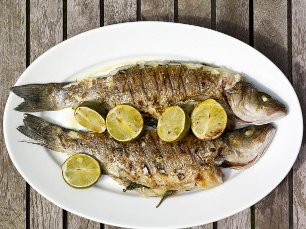

This is the Branzino Recipe
Branzino is a very popular and tasty fish. It is the perfect item for a dinner for two, and
this recipe will show you how to make it.

Ingredients
- Branzino Fish
- Lemons
- Cilantro
- Vegetables
Recipe steps
-
Preheat oven to 425°F.
In a medium bowl, mix butter with capers, lemon juice and parsley and season with salt.
Hold at room temperature.
-
Season branzino cavities with salt and stuff 2 lemon rounds and 1 rosemary sprig in each.
Season fish with salt.In a large, nonstick, ovenproof skillet, heat 2 tablespoons olive oil until shimmering.
Add 2 branzino and cook over high heat until branzino skin is browned and crisp, about 3 minutes per side.
-
Transfer fish to a large rimmed baking sheet. Repeat with remaining 1 tablespoon olive oil and 2 stuffed branzino.
Roast fish in the oven for about 10 minutes, until just cooked through.
-
Serve whole or filleted, passing caper butter at the table.
Click to return to the homepage